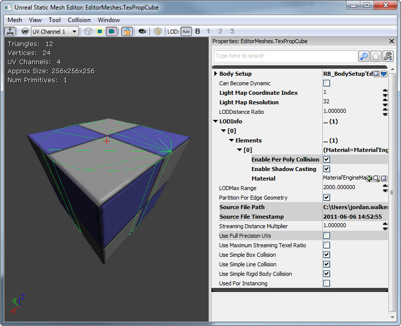
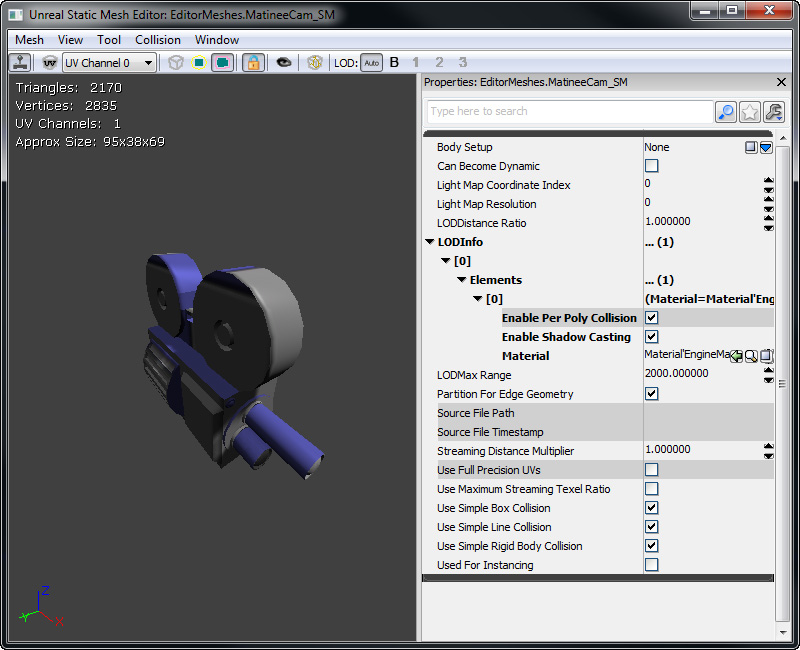
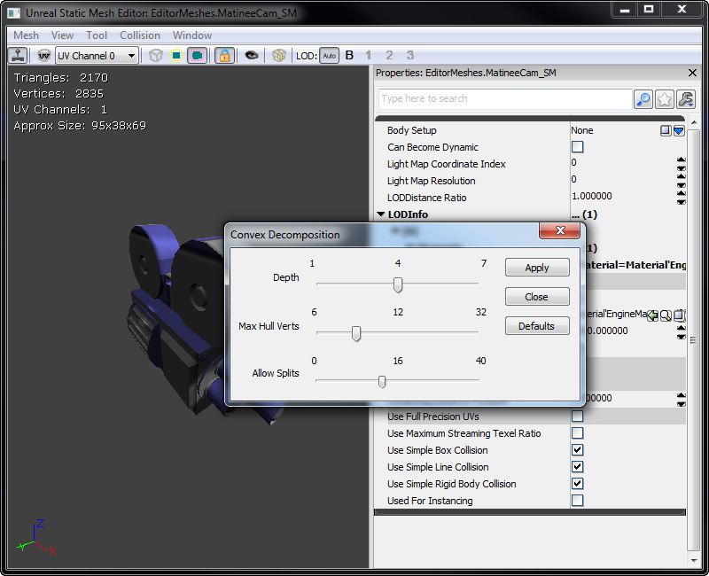
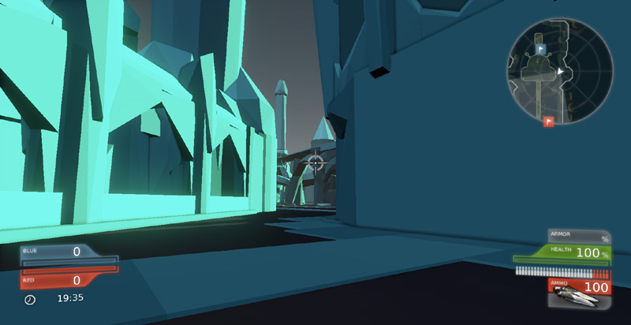
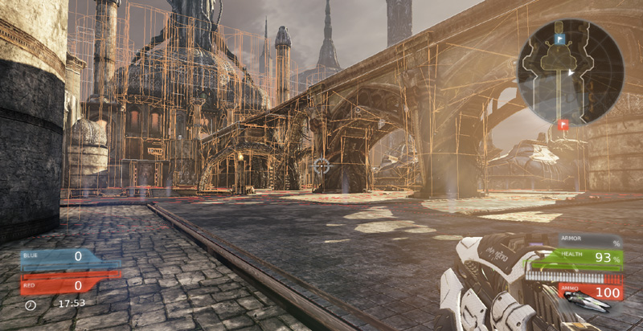
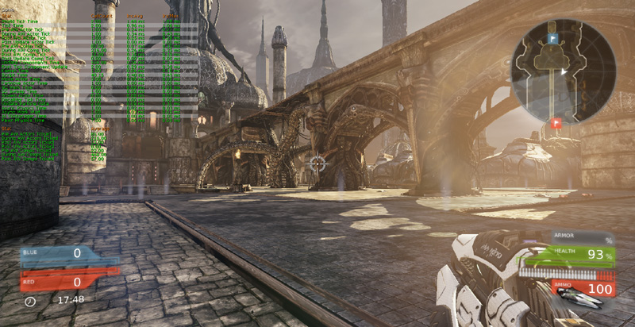

UDN
Search public documentation:
CollisionReferenceCH
English Translation
日本語訳
한국어
Interested in the Unreal Engine?
Visit the Unreal Technology site.
Looking for jobs and company info?
Check out the Epic games site.
Questions about support via UDN?
Contact the UDN Staff
日本語訳
한국어
Interested in the Unreal Engine?
Visit the Unreal Technology site.
Looking for jobs and company info?
Check out the Epic games site.
Questions about support via UDN?
Contact the UDN Staff
碰撞参考指南
概述
创建骨架网格物体碰撞外壳
请参阅 PhAT 用户指南 学习如何使用骨架网格创建碰撞外壳。创建静态网格物体碰撞外壳
使用构建画刷创建碰撞外壳
把您想添加碰撞外壳的网格物体放置到关卡中。然后在它的周围放置一个您想的碰撞外壳的形状的构建画刷。请尽量保持形状的简单性！ 然后选中静态网格物体，右击并从关联菜单中选择 Set Collision From Builder Brush（通过构建画刷设置碰撞）。这将会考虑您应用到静态网格物体上的任何缩放比例。
然后选中静态网格物体，右击并从关联菜单中选择 Set Collision From Builder Brush（通过构建画刷设置碰撞）。这将会考虑您应用到静态网格物体上的任何缩放比例。
 注意到这个碰撞将会被添加到您已经选中的静态网格物体的所有实例上是很重要的。要看到保存画刷为碰撞的效果，您必须保存包含那个静态网格物体的包。
注意到这个碰撞将会被添加到您已经选中的静态网格物体的所有实例上是很重要的。要看到保存画刷为碰撞的效果，您必须保存包含那个静态网格物体的包。

使用 K-DOP 工具创建碰撞外壳
K-DOP 是静态网格物体编辑器中的一个工具，用于生成简单的碰撞。K-DOP 是一种包围盒体积类型，它代表 K discrete oriented polytope（K 离散定向多面体）（这里的 K 是按照坐标轴排列平面的数量）。一般它有 K 个按照坐标轴平行排列的平面，并且使它们和网格物体尽可能的近。最终得到的形状用做碰撞模型。在静态网格物体编辑器中，K 可以是:- 6 - 轴对齐长方体。
- 10 - 有四个边进行倒角处理的长方体—您可以选择按照 X-Y 或 Z 平行排列的边。
- 18 - 在所有边上进行倒角处理的长方体。
- 26 - 在所有边和角上进行倒角处理的长方体。

使用球体简化碰撞创建碰撞外壳
该工具会轻松地用一个球体将这个静态网格物体保卫，这样可以使这个静态网格物体的每个部分都在球体的内部。当然这种方法最适用于那种有点像球体的静态网格物体。
使用自动凸面碰撞工具创建碰撞外壳
该工具会尝试为这个静态网格物体构建一组凸面碰撞外壳。通过调整这些参数，您可以调整凸面外壳的创建方式。
- Depth - 可以确定进入到这个网格物体的深度。调整这个参数可以帮助确认与这个静态网格物体更靠近的碰撞外壳。
- Max Hull Verts - 碰撞外壳顶点的最大数量。增加这个值会增加碰撞外壳的复杂程度。
- Allow Splits - 允许分割的最大值。增加这个值会增加创建的碰撞外壳的数量。

正如你所看到的那样，自动凸面碰撞相当准确，而多边形数量持续降低。
使用您的 3D 内容创建包创建碰撞外壳
请参阅FBX 静态网格物体通道了解如何在 3D 内容创建包中创建静态网格物体碰撞外壳。体积
这些是可以与游戏中的 actor 发生碰撞的不可见 BSP。下面的示例将会向您显示如何生成一个阻挡体积。Volumes can be both blocking collision and non blocking collision.如何创建阻挡体积
首先使构建画刷的形状是正确的。 在虚幻编辑器中右击 Volume（体积）按钮，然后从列表中选择 BlockingVolume。
在虚幻编辑器中右击 Volume（体积）按钮，然后从列表中选择 BlockingVolume。
 这些通常用来阻挡 actor，使他们无法到达关卡中的某些特定区域。
这些通常用来阻挡 actor，使他们无法到达关卡中的某些特定区域。

示例
玩家移动和武器开火
对于适当的玩家运动，尤其是将碰撞柱应用于 Pawn 运动及和其它 Pawn 的碰撞，同时使用运动骨骼来精确地进行碰撞检测(比如射枪时的光线跟踪)的情况下，请考虑以下设置：- 虚幻物理（比如 PHYS_Walking）将会清除 CollisionComponent(碰撞分量)的按照坐标轴排列的包围盒。当应用 PHYS_Walking 时，使用 SkeletalMeshComponent 作为 CollisionComponent 是一个糟糕的主意，因为当人物进行动画时，它的形状改变了很多。
- 如果您将 CollideActors 和 BlockZeroExtent 设置为 true(真)，线性检测将会检测附加到 Actor 上的所有 PrimitiveComponents。
- 您没有必要使 PhysicsAssetInstance 和运动骨骼对骨骼进行线性检测。简单地分配一个 PhysicsAsset(物力资源)并设置 CollideActors 和 BlockZeroExtent 为 true(真)将会是您获得线性检测的结果(假设附加了分量)。
- RBChannel/RBCollideWithChannel 仅影响物理引擎碰撞。如果您的玩家使用 PHYS_Walking，那么它将不会产生效果。
在游戏中检查碰撞
- show collision - 这将会在关卡中描画所有的碰撞模型及阻挡体积。

- show zeroextent - 在关卡中显示碰撞，假设您是一个零粗细（线）跟踪。不可见对象没有碰撞。

- show nonzeroextent - 在关卡中显示碰撞，假设您是一个非零粗细（线）跟踪。

- show rigidbody - 在关卡中显示碰撞，假设您是一个刚体（注意，它不会显示 RBCC 滤镜组，只显示 BlockRigidBody 和 UseSimpleRigidBodyCollision）。

- nxvis collision - 这将显示关卡中的 PhysX 碰撞信息，所以您可以看到正在和哪个钢体进行碰撞。

- stat game - 这将为您显示各种不同碰撞类型所占用的时间的有用的统计数据。
